HISTÓRIA
MOMENTOS MARCANTES DA HISTÓRIA DO SCCP.
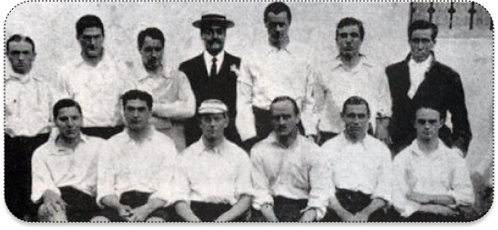
1910 A fundação
Às 20h30 do dia 1º de setembro, à luz de um lampião, na esquina das ruas José Paulino e Cônego
Martins, no bairro do Bom Retiro, o grupo de operários formado por Anselmo Corrêa, Antônio Pereira, Carlos
Silva, Joaquim Ambrósio e Raphael Perrone fundaram o Sport Club Corinthians Paulista. Com mais oito rapazes,
foi formada a reunião dos primeiros integrantes e sócio-fundadores do Timão, que teve seu nome inspirado na
equipe inglesa Corinthian-Casuals Football Club, que fazia excursão pelo Brasil. O presidente escolhido por
eles foi o alfaiate Miguel Battaglia, que, já no primeiro momento, afirmou: “O Corinthians vai ser o time do
povo e o povo é quem vai fazer o time”. Um terreno alugado na Rua José Paulino foi aplainado, virou campo e
foi lá que, já no dia 14 de setembro, o primeiro treino foi realizado diante de uma plateia entusiasmada,
que garantiu: “Este veio para ficar!”.
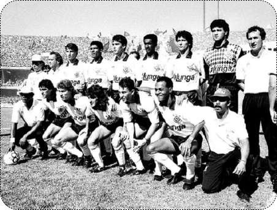
1914 O primeiro título
Primeiro título do Sport Club Corinthians Paulista. Com 10 vitórias em 10 jogos disputados,
o Timão marcou 37 gols e venceu a última partida por 3 a 0, contra o Lusitano, no Parque Antártica. O
atacante Neco foi o artilheiro do torneio com 12 gols. O Alvinegro conquistou o Campeonato Paulista com uma
rodada de antecedência. No dia 08 de novembro, a equipe derrotou o Campos Elyseos por 4 a 0 e sagrou-se
campeã com a seguinte escalação: Aristides, Fúlvio e Casemiro González; Police, Bianco e César Nunes;
Américo, Peres, Amílcar, Apparício e Neco.
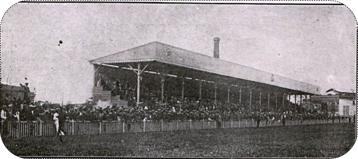
1918 O primeiro estádio
Em suas horas de folga, os jogadores alvinegros construíram o gramado do primeiro estádio
oficial corinthiano. Nomeado como Ponte Grande, a casa do Timão ficava onde hoje é a Ponte das Bandeiras, na
Marginal Tietê.
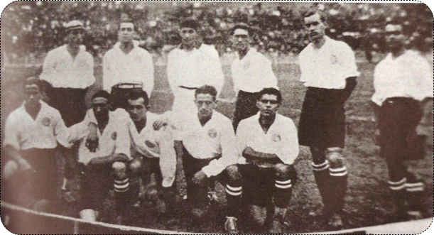
1922 Centenário da Independência
O Corinthians foi campeão paulista no ano do Centenário da Independência do Brasil. O jogo,
disputado em fevereiro do ano seguinte, terminou em 2 a 0 sobre o Paulistano no campo da Floresta.
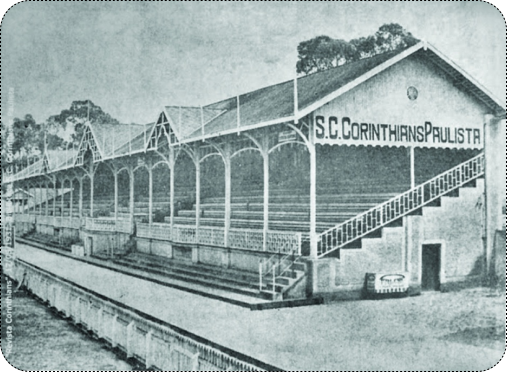
1926 Parque São Jorge
O Corinthians comprou o terreno do Parque São Jorge, cujo campo seria reformado e reinaugurado dois anos
depois.
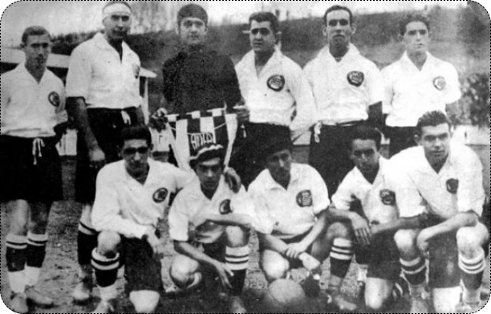
1930 O campeão dos campeões
Em 1930, o Timão fechou a década com seis conquistas do Campeonato Paulista em 10 disputados. Foi o segundo
tricampeonato alvinegro. Logo depois, o Corinthians venceu o Vasco, campeão carioca, por 3 a 2. Por conta
desse resultado, passou a ser chamado de “Campeão dos Campeões”.
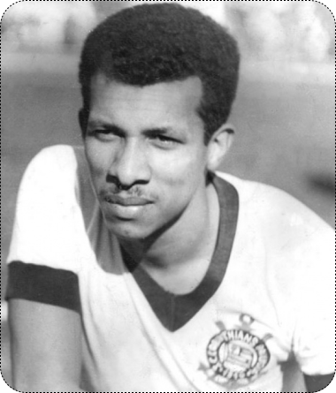
1934 O futuro ídolo Teleco
No final do ano, o Corinthians ganhou um grande reforço: Teleco. O centroavante paranaense
viria a se tornar um dos maiores artilheiros do clube.
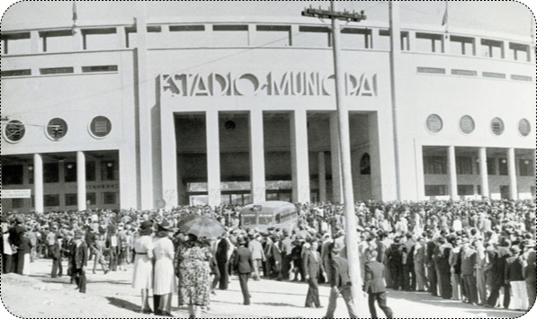
1940 Pacaembu
No dia 28 de abril, o Timão inaugurou o estádio do Pacaembu, vencendo o Atlético-MG por 4 a
2.
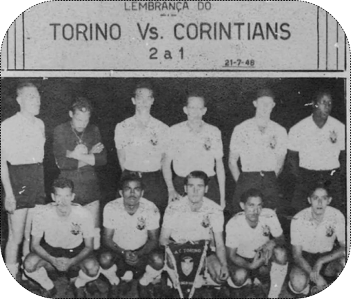
1948 Vitórias internacionais
Além de vencer novamente a Taça Cidade de São Paulo, o clube conquistou grandes vitórias em
amistosos internacionais, realizados no Brasil, contra o River Plate (ARG) e o Torino (ITA).
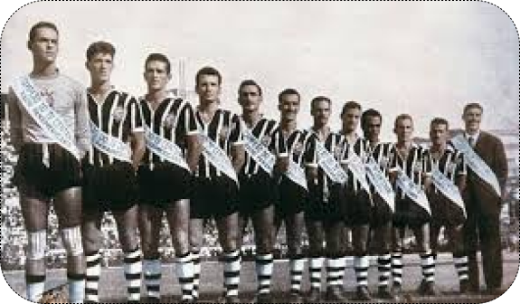
1953 Ano de glórias
O Coringão venceu pela segunda vez o Rio-São Paulo e levou também a Pequena Taça do Mundo,
jogando contra Barcelona (ESP), Roma (ITA) e a Seleção de Caracas, na Venezuela.
1954 IV Centenário.
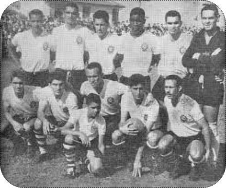
1958 Timão no Mundial
Além de ter vencido o Troféu Charles Miller e o Torneio Brasília, o clube do Parque São
Jorge teve grande importância no primeiro título da Seleção Brasileira da Copa do Mundo. Na Suécia, o
goleiro Gilmar e o lateral esquerdo Oreco representaram o país e o Corinthians na conquista inédita.
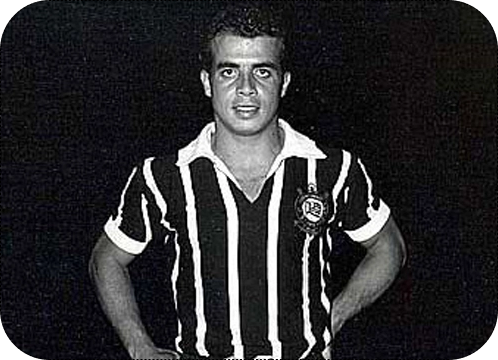
1960 Sem conquistas
O Timão contratou Almir, o “Pelé Branco”, pela quantia recorde de 8 milhões de cruzeiros. Mas a equipe não foi tão bem no Paulista e ficou somente com o terceiro lugar.
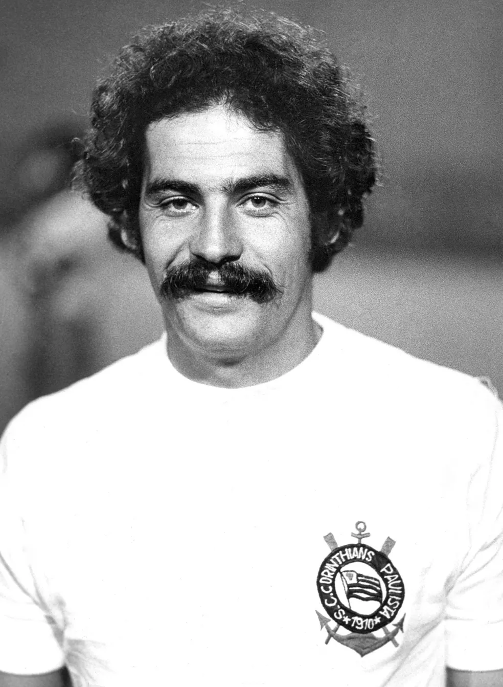
1965 Rivellino
Com Rivellino na equipe, o Timão venceu o Torneio Pentagonal do Recife. Além disso, tornou-se o primeiro clube a vestir a camisa da Selecão no exterior, mas saiu derrotado pelo Arsenal por 2 a 0 em Londres.
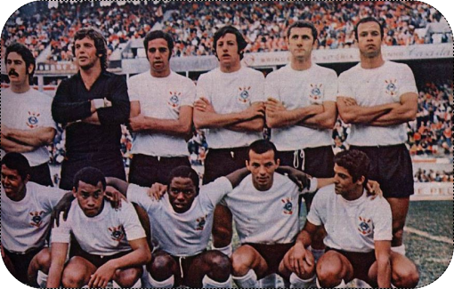
1971 O primeiro Brasileirão
No primeiro Campeonato Brasileiro da história, o Alvinegro dominou a primeira fase e foi líder, mas não teve um bom desempenho no final da competição.
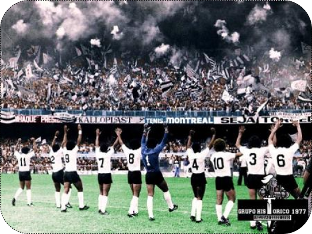
1976 Invasão Corinthiana
Calcula-se que cerca de 80 mil corinthianos tenham viajado até o Rio de Janeiro para assistir ao jogo em que o Corinthians empatou com o Fluminense por 1 a 1, ganhou nos pênaltis (4 a 1) e classificou-se para a decisão do Campeonato Brasileiro de 1976 contra o Internacional. É, até hoje, um dos maiores deslocamentos pacíficos do homem no mundo.
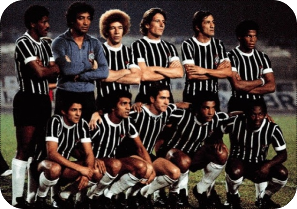
1977 Fim do Jejum
Depois de 22 anos, oito meses e sete dias, o Corinthians era novamente campeão paulista. O gol foi marcado por Basílio na final do Campeonato Paulista na vitória por 1 a 0 sobre a Ponte Preta, realizada no Morumbi no dia 13 de outubro. Quatro dias antes, o estádio registrou seu maior público: 146.072 pessoas acompanharam um dos jogos da final entre as equipes. O Timão terminou a competição com 72 gols marcados em 48 partidas. No time do técnico Oswaldo Brandão, o artilheiro do torneio foi Geraldão, com 25 gols.
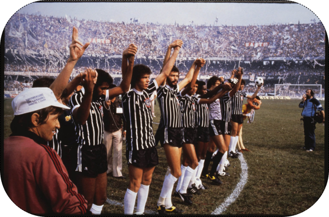
1982 Democracia Corinthiana
Embalado pelos ideais da Democracia Corinthiana, o Timão foi campeão paulista naquele ano. O movimento visava maior participação dos jogadores e demais empregados do clube nas decisões do Departamento de Futebol. Durou até 1985 e contou com um grupo de jogadores talentosos e únicos, como Sócrates, Casagrande, Zenon, Biro-Biro, Zé Maria e Wladimir, entre outros.
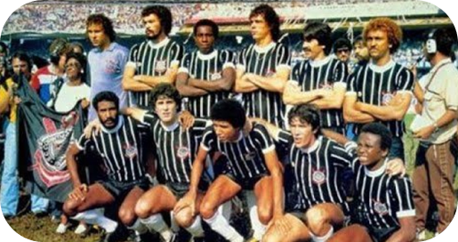
1983 Goleada histórica
Depois de 30 anos, a equipe do Parque São Jorge foi bicampeã paulista novamente. Assim como no ano anterior, o clube venceu o São Paulo: 1 a 0 no primeiro jogo e 1 a 1 no segundo. Ainda em 83, o Corinthians aplicou a maior goleada de todos os tempos no Campeonato Brasileiro: 10 a 1 no Tiradentes-PI.
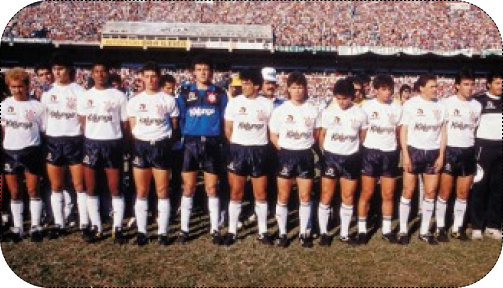
1988 O 20º Paulistão
Depois de 30 anos, a equipe do Parque São Jorge foi bicampeã paulista novamente. Assim como no ano anterior, o clube venceu o São Paulo: 1 a 0 no primeiro jogo e 1 a 1 no segundo. Ainda em 83, o Corinthians aplicou a maior goleada de todos os tempos no Campeonato Brasileiro: 10 a 1 no Tiradentes-PI.
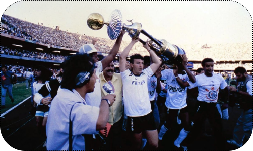
1990 Campeão brasileiro
No dia 16 de dezembro, o Timão levantou o troféu de campeão brasileiro pela primeira vez na história. Com 23 gols marcados em 25 partidas, a equipe do técnico Nelsinho Baptista venceu o São Paulo por 1 a 0 no último jogo, realizado no Morumbi. Neto marcou nove dos 23 gols, cinco em venenosas cobranças de falta. A escalação do time no dia da grande final foi: Ronaldo, Giba, Marcelo, Guinei e Jacenir; Márcio, Wilson Mano e Tupãzinho; Neto, Fabinho e Mauro.
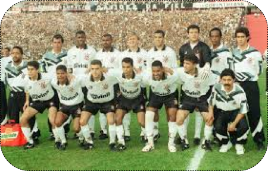
1995 Campeão de tudo!
Em um ano espetacular, o Corinthians foi campeão da Copa São Paulo de Juniores, do Campeonato Paulista e da Copa do Brasil. Nesse último, o Alvinegro venceu oito das 10 partidas disputadas. Os jogos da final foram disputados com o Grêmio. Tanto no Pacaembu quanto no Olímpico, vitórias corinthianas: 2 a 1 em casa e 1 a 0 em Porto Alegre.
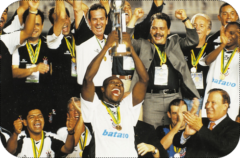
2000 O primeiro Mundial!
O primeiro título mundial de clubes reconhecido pela Fifa veio com uma vitória nos pênaltis contra o Vasco depois do empate sem gols no tempo normal. A escalação da final foi: Dida, Índio, Adílson, Fábio Luciano e Kléber; Rincón, Vampeta, Ricardinho e Marcelinho; Edílson e Luizão. O Alvinegro fez seis gols em quatro jogos disputados. O segundo tento de Edílson no empate em 2 a 2 contra o Real Madrid é considerado um dos mais marcantes da história corinthiana.
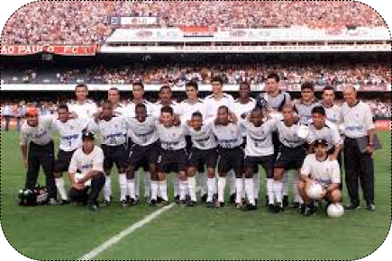
2003 Título sobre o rival
Com duas vitórias por 3 a 2 sobre o São Paulo, o Coringão levou o Campeonato Paulista mais uma vez. Rogério, Fábio Luciano e Gil marcaram no primeiro duelo. Na partida final, Liédson e Jorge Wágner (2) balançaram as redes para delírio da Fiel. O clube também aplicou uma goleada histórica naquele ano: 6 a 1 em cima do Paysandu pelo Brasileirão.
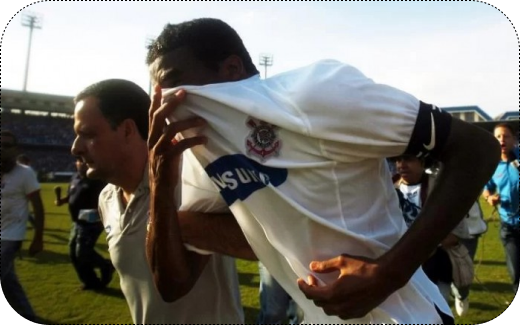
2007 O pior episódio da história
No pior ano da história do clube, o Timão foi rebaixado para a série B do Campeonato Brasileiro.
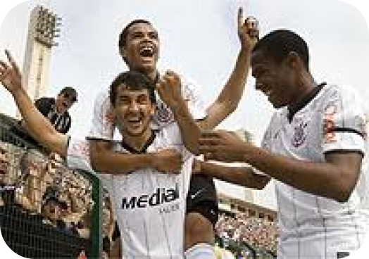
2008 O Coringão voltou!
Sob a liderança do técnico Mano Menezes, o Corinthians teve uma ótima campanha na série B e conquistou o título com quatro rodadas de antecedência. Foram 79 gols marcados em 38 duelos. A última partida foi realizada no Pacaembu, com vitória corinthiana por 3 a 2 sobre o Avaí. Os atacantes Dentinho e Herrera foram os artilheiros da equipe, com 14 gols cada.
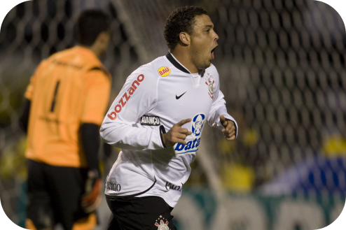
2009 Ano fenomenal!
Um dos maiores ídolos do futebol de todos os tempos foi o principal nome daquele ano no Corinthians. Ronaldo, o Fenômeno, marcou o gol mais bonito de sua carreira no primeiro jogo da final do Paulistão contra o Santos. Com a vitória por 3 a 1, bastou um empate em 1 a 1 na volta para o Alvinegro levar o caneco de forma invicta. Dois meses depois, em julho, o Timão venceu o Internacional em casa por 2 a 0 no primeiro duelo da final da Copa do Brasil. Em Porto Alegre, o resultado de 2 a 2 garantiu mais um título ao Coringão.
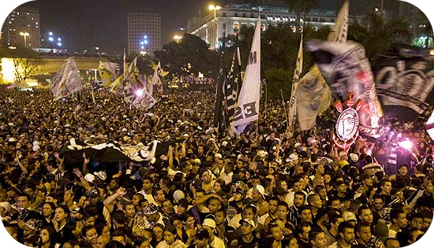
2010 Centenário Corinthiano!
Apesar de não ter levado nenhum título em 2010, o ano foi de muita festa para a Fiel Torcida por conta do Centenário Corinthiano. No dia 1º de setembro, mais de 100 mil loucos do bando lotaram o Anhangabaú para as comemorações de aniversário do Timão. Em novembro, Ronaldo Fenômeno marcou o último gol de sua carreira como profissional. De pênalti, o eterno camisa 9 fez o gol da vitória por 1 a 0 sobre o Cruzeiro.

2012 O ano inesquecível!
Pela primeira vez na história, o Corinthians foi campeão da Libertadores. E, para ser perfeito, de forma invicta! Foram 22 gols marcados e apenas quatro sofridos em oito vitórias e seis empates. O atacante Emerson marcou os gols da vitória por 2 a 0 contra o Boca Juniors (ARG) no jogo de volta da grande final. A escalação da partida foi: Cássio, Alessandro, Chicão, Leandro Castán e Fábio Santos; Ralf, Paulinho, Danilo e Alex; Jorge Henrique e Emerson. O gol de cabeça Paulinho contra o Vasco, que levou o Corinthians às semifinais da Libertadores, já é considerado por muitos o mais marcante da história do clube. Além disso, o Timão conquistou a Copinha também de forma invicta e teve um atleta medalhista olímpico em Londres. O nadador Thiago Pereira ficou com a prata nos 400m medley. Em dezembro, o Bando de Loucos invadiu o Japão e viu o Corinthians conquistar o Mundial de Clubes da Fifa pela segunda vez. Guerrero marcou de cabeça e garantiu o título contra o Chelsea no ano que se tornou inesquecível para a Fiel Torcida.

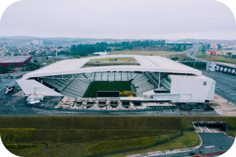
2014 Casa nova!
Maio de 2014 foi mais uma data histórica para o Sport Club Corinthians Paulista. No dia 10 daquele mês, a Fiel podia, enfim, chamar um lugar de casa: a Neo Química Arena era inaugurada com a realização de um jogo marcante: Corinthians x Corinthians, com a participação de mais de 100 ex-jogadores do Timão.
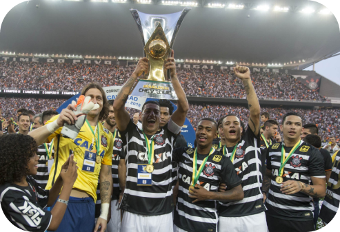
2015 Volta de Tite!
Com a volta do técnico Tite, o Corinthians conquistou o sexto título brasileiro de sua história. Com 81 pontos conquistados, o Timão teve a melhor campanha da história do Campeonato Brasileiro em pontos corridos com 20 clubes. Foram 24 vitórias, nove empates e cinco derrotas, melhor ataque (71), melhor defesa (31), melhor equipe mandante e melhor visitante. O título foi confirmado em partida contra o Vasco, em São Januário, válida pela 35ª rodada. Vagner Love marcou o gol do empate em 1 a 1 que deu a taça ao Corinthians. Na rodada seguinte, na Arena Corinthians, a equipe corinthiana goleou o rival São Paulo por 6 a 1 no jogo da entrega da taça.
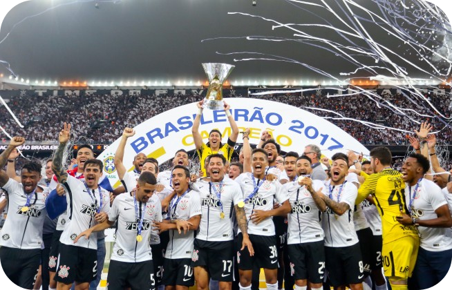
2017 Ótima fase!
Na primeira temporada de Fábio Carille como treinador corinthiano, o Timão conquistou o 28º título paulista e o 7º Brasileirão de sua história. Apontado como uma das equipes mais frágeis entre os grandes no início da temporada, o Timão venceu o torneio estadual após o eliminar o São Paulo nas semifinais e bater a Ponte Preta na decisão. No Brasileirão, o Corinthians deu continuidade ao grande momento da equipe e alcançou a segunda maior série invicta da história do clube. Foram 34 jogos sem perder num intervalo de tempo de cinco meses: do 19 de março a 19 de agosto. No fim do ano, o Corinthians confirmou o título do Brasileirão em vitória sobre o Fluminense, na Arena Corinthians.
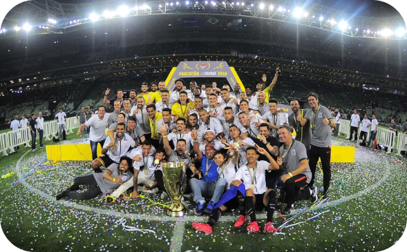
2018 Campeão na casa do Rival!
Na atual temporada, o Corinthians voltou a conquistar o bicampeonato paulista após 35 anos. Na final, o Timão bateu o arquirrival Palmeiras, em pleno Allianz Parque.
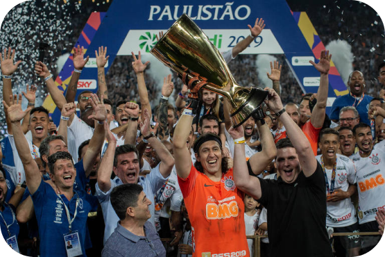
2019 30 vezes campeão estadual!
Este ano, o Timão voltou a ser tricampeão paulista, após 80 anos (o último Tri havia sido em 1937, 1938 e 1939). Na decisão, o Alvinegro venceu o São Paulo, na Arena Corinthians, e levantou o seu 30º campeonato estadual.